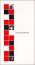
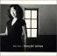
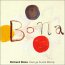

2001年3月
[
日記一覧
] [
トップ
]
27
26
|
25
24
23
22
21
20
19
|
18
16
15
14
13
12
|
11
10
9
8
7
6
5
|
3
2
1
3/27 (Tue)
区役所(戸籍謄本、転出届)
外務省大阪分室(apostille申請、ちなみにそこ (府庁の3階の狭い一部屋)の正式名称は 「外務省領事移住政策課証明班」というらしい)
ついでに citibank (ここも 3 時に閉まるんだな、 日本の銀行並ではないか)
疲れた
3/26 (Mon)
引越し(京都->Netherlands, 京都->広島) 手配終了
あとは荷作り (3/30までに)
前から嫌いだが (例えば
4/13/2000
、他にもある)、 クロネコヤマトは横柄だ
オランダへは船便で
Japan Laggage Express
に頼んだ。 重量に無関係、体積勝負。
ニュースステーション
に
中村修二氏生出演
、見た
声を裏返らせて「大学入試撲滅」を主張していらした
「全部の大学でイッペンに」っていうのは「机上の空論」だが、 例えばどこか一つでもやって work させればいい話か
しかし、すると「そんな大学は大学ではない」と 文部省(新しい名前、何だっけ)が言うのかな
(小中高の)先生たちも、きっと、困るんだろうな、 マニュアル対応できなくなるから
やっぱ Santa Barbara に行かざるを得ないわけだ。 いいよな Santa Barbara
「少子化」という文脈もあるか…(大学入試が有名無実化する、か?)
「少子化で大手(東大など)しか残れん(地方大とかはやばい)」というが、 少くても「分布」してるはず
やっぱり、相対的に勝負してる(させてる)のが問題ではないか?
ある意味、勝負とは基本的に相対的なものだが、 そういう勝負は疲れるし、きりがない
久米宏は、ミーハーで知ったかぶりしたがる人だ (まぁ旗振り役はそれでもいいのだろうけど)
後記、 その時言ってた本は 「
怒りのブレイクスルー
」
怒りをエネルギーにするタイプの生き方って、したくない (ex. 「なにくそ」を肥しにして、とか) (4/14/2001記)
色々疲れた
3/25 (
Sun
)
ひたすら荷物(書類)整理@自宅
3/24 (
Sat
)
pm 3:30, 小さいが随分と長い地震。 今大きいのが来たら、家の引越し作業に甚大な被害がでるな
なんてのん気に書いて、夕方広島に「居候よろしく」と 電話しようとしたら繋がらない……
嫌な雰囲気がしてニュースサイトを見ると、
広島で地震
@
goo news
幸い、神奈川の父に連絡したら無事とのこと、一安心。
大相撲春場所
北桜
は 8 勝
豊桜
は 4 日目から休場しているではないか
安芸乃島
は既に 9 敗か
未来への教室
「
エリック・カール
」 (再放送)
「主体的に見る」こと、 「教育、先生」について、 考える
サマリー：教育について
LA confidential 面白かった
3/23 (Fri)
今日は何と言ってもミールだろう
実は一週間くらい前、夢でロケットが自分に向けて落ちて来た (直撃で、覚悟した)。
まあ、ミールの話があったのでその影響で見たのだろうが
自由落下になったとき、どういう避難方法があるかな
地下に潜るのがいいか、すると地下鉄に人が殺到して…窒息しそう
(伝聞)ラジオでミール無事南太平洋に落下、とのころ
NTT 関係、何とか話が通じる。 営業の(古い人の)教育に、力を掛けて欲しいものだ、 高い金取ってるのだから(from me to NTT)。
[phys]microhydrodynamics執筆 = 2000/8
う〜ん、まとまらん。 Rev 2.13
来週は 100% 引越しの予定だったが…
4/18/2001
: 脱稿。
3/22 (Thu)
5/15/2000
以来 初めての書き込みが
xml-BBS
にあった
空のタグも問題無く処理できているようだ (既に java は忘れてしまった)
いまどきは
cocoon
も
BXS
だったか、 何か使いやすくなってるようだ
ただし、Java2 が必要ってのがちょっとネック (ってのは、実は昔の話になったのか? cf.
FreeBSD Java Project
)
まあ、今や遊ぶ時間もない…
NTT
の
営業所
の代表電話番号は、なんで web に載っていないのか?
戦略か? 代表番号だけでなく、web には全然「電話」番号が載っていない
結局、104 -> 116 -> 0120-729-141 (
加茂営業所
)にたどり着く。 頭に来た。カルシウム不足か
営業の方が、また何にも分かっていらっしゃらないので、まいった
「開設時の営業担当に連絡が取れない場合、 2,3営業日掛かるが、新たに手配も行っている」 方が、早いかもな…
営業の教育も、兼ねているのだろうか。
オランダは就労ビザみたいなものはない？
詳細は FAX 待ち
ちなみに、オランダの大使館及び総領事館の電話番号は
ここ
に載ってた
[phys]microhydrodynamics執筆 = 2000/8
Rev 2.12、 何か守りに入って来たかな、イカン
4/18/2001
: 脱稿。
TV で ZONE を見た
News Station 30分遅れにより、久しぶりに発見して見た
大変 heavy な内容
高橋健次さんは現在進行形で頑張っていらっしゃる、 自分も頑張らねばと強く感じる。
頑張れ、アイスバックス
リンクが古くなった模様で、更新 (2001年5月22日、
2002年1月13日
)
日光アイスバックス応援ページ
@
下野新聞
アイスバックス公式ホームページ
「
高橋ＧＭアイスバックス存続願う/死の宣告にも負けずチーム存続へ奔走
」 @yomiuri (
local copy
)
archive.org
から発掘
倶楽部ニャンコ IceBucks Edition
←
8/15/2002
,
1/13/2002
夜中、春からの main machine 購入
私の商売道具、自立した仕事環境は最低確保しておきたい
今使っている machine は全て国の財産、持って行けないからな
とは言っても貧乏人なので
TPi1200(1161-264)
を
IBMショッピング
の outletで 13万で購入。安くなったもんだ
←
1/13/2004
,
1/8/2004
しかし今使ってる、でかくて重い
TP600
よりも(少し薄いが)少しでかくて、ちょっと重い…
金があれば
TPi1124
とか、 Crusoe(
C1VJ
、
FIVA
、
LaVieMX
)、 おもしろそうだけどな
3/21 (Wed)
向こう
での seminar のスケージュルが決まった
6月19日、pm 4:00-5:00、タイトルは " Hydrodynamic interaction of particles in Stokes flow "
何と既に web に
載っている
ではないか…
それより paper work の方、頑張って欲しい
[phys]microhydrodynamics執筆 = 2000/8
縲径nother 専門家」からコメントを頂く、感謝。 Rev 2.11
4/18/2001
: 脱稿。
3/20 (
Tue
)
一日荷物整理 @ 自宅
3/19 (Mon)
21世紀の freshmen へおみやげ
引越しで荷物の整理してたら、 1988年の物理学科の新歓パンフがでてきた
せっかくなので scan して(一時間かかった…)
置いておく
1/26/2001
応募の 今年度第24戦(通算51戦目)のダメ届く。 まだ 2 つ残ってるが
分母が 42 って多いのか、そうでもないのか
4 人に絞った時点(2月中旬)で or 1 人に絞った時点(2月下旬)で ダメは知らせないのかな? (それが常識?)
まあ買い手市場ってことか
さすがに公募出すのも飽きた
[phys]microhydrodynamics執筆 = 2000/8
今週でけりを付けるつもり (まだ Sec 4 は全然まとまっていないが)。
11pt は飲むとして baselineskip は許してもらおうか。 Rev 2.10
これまでも
PS
には常に最新版を置いてきたが、 以後のコメントは反映できないかもしれない
しかし(当然)コメントは歓迎します
4/18/2001
: 脱稿。
もう気分的に研究モードではいられないので、腹をくくって引越しモードに入る
しかし、というか当然というか、 paper-work が遅れている様子… 5/1 付け的な雰囲気
まあ visa がとれたらすぐ行くつもりではあるが
3/18 (
Sun
)
「
世界ウルルン滞在記
」、
村上弘明
引越し荷物の整理をしつつ流し見してたが、 彼が結構夢中になってたり 目が点になってたり 感動してたり 泣きそうになったりしてて、 よかった。 普段、忙しいのかな?
誰か偵察隊としてオランダに滞在してくれないかな
「
情熱大陸
」、
モーリー・ロバートソン
先週(双子の hockey 選手)の予告見た時は「ひでぇ」と思ったが、 今週見てみたらそうでもなかった。
「東大を蹴ったんだから…」って statement は、 何か思いっきり日本的だな (分かりやすく言ってるのかな?)
広島かぁ、しかし「広島だから喧嘩」って statement もなぁ (分かりやすく言ってるのかな?)
3/16 (Fri)
[phys]microhydrodynamics執筆 = 2000/8
そろそろ最終 form にする…と p.65、 ダイエット必至
font を見やすく多用する
Rev 2.9
4/18/2001
: 脱稿。
何かダメダメな一週間だった
3/15 (Thu)
今日はおつきあいで3食ペース、 腹一杯…
こうなることは目に見えていたので朝抜きゃあよかった、というのは結果論
昨日の原稿
、実は obligation が(自動的に)発生していたらしい
で、そのつもりで読み返してみる
(name-value とか、ウワサとかからくる)派手さと異なり、 研究はむしろ堅実だ(と私ごときに言われたくないだろうけど)
結構 anti 派であったようだ
dynamics に対する static とか
formal な approach に対する physics 重視とか
9/14/2003
: アンチ・クライマックス派
3/14 (Wed)
tex にふりまわされる一日
進化が早く、過去の常識がすぐ常識でなくなる
結局
pTeXのソース
@
pTeX(ascii)
にしたがって、 pTeX 2.1.10 (TeX 3.14159, teTeX 1.0) と pLaTeX <2000/11/03> (LaTeX <2000/06/01>対応) を入れ直す
PS fonts (Type 1 fonts) を使った preview などの環境はまだ (そっちがしたかったこと)
早川さん
による川崎さんのインタビューの最終稿(?)を見せてもらう
川崎さん、結婚していらっしゃったようだ。 噂に聞く hard-work と家庭生活、その辺のはなしも読みたかったなぁ
いずれ「
物性研究
」にのるはず。
早川さんの
日記(3/19)
にて
公開(dvi)
されている。 (3/21記)
3/15/2001
: 査読する
3/13 (Tue)
[phys]勉強ぼちぼち
[phys]粒子分散相中の空隙 project
2/28/2001
より
おさらいを兼ね 2D FTS (N=32, u
∞
=0) 計算
10 step 縺翫″縲…ore dump
1 step おき、det を出力、計算中
zeta チェックは、まだ決着ついていない!
3/12 (Mon)
先週は一週間「原稿」関連に終始した (というか、あまり生産的ではなかった (し、学会もキャンセルした))ので、 今週は「勉強」に力を入れよう
モノは(これまで避けて来た)「完全流体」 (いまさら(というと、何か
本の名前
みたい))
「
登山家の野口健さんが２回目のエベレスト清掃へ
」 @goo (
local copy
)
この登山家「野口健」、何かはずしてると思ってた:
「インスタントの違いが分かる」CM自身の滑稽さ(言い古されているが)や、
「エベレストではものは腐らないから捨てちゃだめ」と 小学生に教えてたり、とか
いや、その小学生たちもきっと 「エベレストではものは腐らないから "エベレストでは"ものは捨てないぞ」 と思っているだろうが
しかし、もしかしたら確信犯なのか、と今更に思う (うまく使ってるのか、と)。
小学生も、「エベレストでは捨てないが、じゃあ道路には…」とか、 あるときふと考えるかもしれないし (実はこれをはじめから狙ってたりして)。
「ゴミは捨てないようにしましょう」という標語は、 機能していないから
スマートだなぁ
←
6/4/2003
3/11 (
Sun
)
大相撲
春場所、
いつも
のようにあっと言う間の二ヵ月
今場所の向兄弟の
番付け
、 北桜(兄)が西十両 4枚目、 豊桜(弟)は西十両 11枚目
幕
の 安芸乃島は東前頭 5枚目
寺尾、勝ったな
腐った言葉(
2/27/2001
)、追加
「失われた○○年」、 何か最近頻繁に聞く。使ってる人はカッコイイと思っているのか?
「有名」、 俗な(つまり、お金持ちになる、とかと強く couple した)意味での。
3/9/2001
参照。
去年の12月頃
Northwest
から シルバーエリートの会員証などが届いたのだが、
締めが 3/1 なので、その 2000年度のシルバーエリートの有効期限2月一杯、 これじゃ使えないなと思ってた。
そうしたら 3月始めに届いてた封筒(開封したのは今日)に 2001年度のシルバーエリートの会員証が。
「入るのは難しく、一旦入って内輪になるとユルユル」って状況は、 日本の[大学(入試)|官僚|社会]とおんなじかな?
(work すれば or ある種の)「エリート社会」か? (まあ実際「シルバー
エリート
」だし。)
KLM
使い倒すか…(その財源が、問題か)
3/10 (
Sat
)
先日買った
CD、
HOSONO BOX

「風来坊」、 何か timely。「歳月経っても風来坊〜」ってならないように、したいな。
1/23/2008
: 「旅行（者）嫌い」な風来坊。
HOSONO BOX の booklet は、結構読んでしまう。
しばらく円盤を見るようになった、とか
朝スタジオに行ったら(細野さんが)気絶してた、とか
timely といえば
Home Girl Journey
に入ってた「さすらい」も

風がくれたメロディ
(Richard Bona)

4曲入りのミニアルバムで「みんなの歌」らしいが、絵付きで見たい。
2曲目と3曲目は first album からの pick-up らしいが、 どっちも
monterey で聞いた曲
(だったと思う)、 よかった。「jambo〜」って掛け合いした曲だったかな? オペラ風に張り上げられた声に突っ込みを入れた richard bona が、よかった。
3/9 (Fri)
雪、積もったな。 バスで来る。 今日合格発表か?
悪い知らせ(not for me)を聞く。 関係ないこともまとめてごちゃごちゃ考える…
強い立場の人が弱い立場を理解できない(しない)のは 偽物の証か。
「役割」を演じてる(だけの)人、 人に「役割」を押しつける人、 物事を既存の枠組との matching (だけ)で見る人、 は信用ならない
←
6/23/2002
「かけがえのない存在」 (cf.
2/15/2001
、
翻訳夜話
p.25) って…
「(いわゆる)サラリーマン」とは逆の意味か
「使い捨て」の逆(cf.
2/27/2001
)
「(本来の意味の)有名」と実は同義? (cf.「悪名クラブ」
1/16/2001
、
1/12/2001
、
1/10/2001
)
「アイデンティティー」という言葉に暗に託される意味か
「役割」をこなせるとは、「かけがえがある存在」、か (当り前、だけど)
F1 とファミリア(カローラ、だったか cf.
1/19/2001
)
以上、最近消化不良な
ウンコ
3/8 (Thu)
先日再び物欲炸裂(日本に居る内に買おう、という理屈つけて)
どうも仙台に居た頃カセットにダビングして車で聞いていた音楽に、 何か(無意識に)引っかかるものがあるようだ (
abercrombie
もそうだし)
[blog] 「
Sweet Painted Trusty
縲后
From Kangaroo Court
引用
オレ，日本経済を立て直すキーワードは「IT」ぢゃなくて 「正直」ぢゃないのかと，最近つくづく思ってんだが，どうですか。
2/7/2007
: 「下流指向」内田樹著
付記：やっぱり時を経過してもこのフレーズは頭に残っているので、
定理
にしておく。 こういう感覚って naive すぎか？(3/20/2008)
「当り前のことを当り前にする(ことを、くじけずにやる)」 って毎回言っていると
言ってる
が、 調べると確かに結構言ってる (
1/26/2001
,
12/19/2000
)。
昨日買物した時眺めた 「
考える力、やり抜く力私の方法
」 (中村修二)も、 (目次みただけだが) 当り前の事ばかり並んでいた(ように見えた)。
この本、ビジネスマン向けの know-how 本みたい (そういう売り方、なのかな)。
結局、(自民党(若手)議員のような)日和見はダメってことか
何か「ハラハラ・ドキドキ」とか、ふわふわしたこと言ってたな、昨日
冷静に考えて、物理学会の
講演
をキャンセルしようと思う。 2連チャンだな
前回ってのは
CCP2000
。 先日登録料の返金を受けた。戻って来ると思わなかったのでうれしい。
(手)計算、落ち着く所に落ち着く。
3/7 (Wed)
(最後の?)年度末の買物
hard を買って、本を見たら欲しいもの発見。しかし足が出るので断念。
モノは 「
Perspectives in Fluid Mechanics : A Collective Introduction to Current Research
」
26,000円なにがしの値札。 amazon.com では $160.00 適正価格だろうか? 20,000円なら買えたのに…
(hard を返品すればすむ話だが、まあそういう巡り合わせと思って)
[phys]microhydrodynamics執筆 = 2000/8
縲径nother 専門家」よりコメント(感謝)
4/18/2001
: 脱稿。
出口の無い(手)計算に終始
3/6 (Tue)
昨日いろいろと友人(とこちらが勝手に思っている方々)に メールなど書いた返事が、 今日ぼちぼちと届く。
「
著作権法を逆手に取る『エイムスター』ネットワーク (Brad King)
縲后wired news (
original
)
レコード会社は必要なのか?
億万長者にならなくてもいい音楽家が直接客に音楽を売れる環境は、 internet が理想的に work すれば可能ではないか
まあ、独占的な成功を収めたいなら、必要なのだろう、 レコード会社みたいな元締めが。
←
9/12/2003
,
6/5/2003
,
5/10/2003
では研究者は、と考えると「
ホワイトカラー真っ青(ポール・クルーグマン)
」 (
local copy
) を思い出す
←
12/27/2002
,
8/2/2002
7/16/2010
: [news]村上龍氏の決断に出版社は戦々恐々
[phys]microhydrodynamics執筆 = 2000/8
「
専門家
」よりコメント(感謝)
2/23
の早川さんのコメント (やっと)反映、 Rev 2.7
4/18/2001
: 脱稿。
何か乗らないと言って書いてばっかりだな…
3/2
の「なやみ、ないない」の由来、判明
あの
建物が「無憂宮」という名前なのだそうだ。
大学2年間のフランス語の知識はどこへ……
sans souci = なやみ、ないない
ということで、やっぱり悩んではいかんかった、というオチ
3/5 (Mon)
[phys]microhydrodynamics執筆 = 2000/8
bubbly liquids 見直し、 組込む方向で(どうせオランダでやりそう(やらされそう)だし)、 全然まとまらないが、少し面白いかも。
Rev 2.6
4/18/2001
: 脱稿。
中西さん
のお土産を食す
そう言えば、私はどこに行ってもお土産買って来た/行ったこと無いな…
家に帰ってニュース見る。色々(生産的でない出来事が)あった一日だったようだ
この国の舵取りをしてる人達は、言うべき所では言わず、 裏で試験の答案を見せあってるカンニング人間ばかりだな…… (しかも、料亭などで答えのすり合わせをやってるらしい)
国会議員無給化(ボランティア化)って現実的ではないか?
この状況では逆に森さん辞めるべきでは無いようだ
しかし森さんってオジサンだな、 インタビューで横の女の子に(だけ)しっかり答えていたな
諌早湾の話、感情論になってるな
そもそも自然を触るべきではない or 触るからには取り返しがつかなくなる覚悟が必要ってことか
韓国の干拓事業の失敗っていう前例を、 しかし何で計画時に見なかったのか(後のまつりだが)
3/3 (
Sat
)
日本の文化を、 日本を離れる前にして、 「雛まつり KIMONO コンサート coba live 2001」(競争率3倍)で、
体験して来た
。
着物っていいなぁ(眼鏡かけてきょろきょろ…)。
男女比率は95:5位かな(故に競争を勝ち抜けた、とはかおの註)。
階段で袴の裾を踏んで上がれず「不自由」を実感。
姿勢は絶対良くなる(腰が入る、というか腰が基本と意識される)。
音楽について。
メンバーは、
coba
、
鬼怒無月
(g)、 バカボン鈴木 (b)、 Yoshie(平ヶ倉良枝, dr)。
これが coba (小林靖弘) のキャラなのだろうが MC 2回目からは疲れて来た。
曲も結構同じに聞こえた。 「おしゃれ関係」で使い倒されているハンデはあるが、 使い古されても残る「何か」が勝負してるポイントだし。 3, 4 曲良いのもあった。
こちらの守備範囲とあちらの攻撃範囲の端がかすってる位なのかという感じ。
1/30/2001
応募の 今年度第25戦(通算52戦目)のダメ届く。 まだ3つ残ってるが…
3/2 (Fri)
今日はまた寒いな。
穴の空いた靴下(or靴下の穴)を、
a)「ダイヤ(ダイヤモンド)」と呼ぶ
b)「おはよう靴下」と呼ぶ
どっちも、よく考えると、奇妙
「
三題噺（三題話）ってなに？
」
大信田さん
の注意を受けて調べて見た結果
ニュアンスが違う(3->1 だから逆か)ようなので、 やっぱり「三大話」だな
[phys]microhydrodynamics執筆 = 2000/8
Rev 1.9 hard-copy を更に勝手に「流体力学の専門家」1名に送付
「
流体力学の良識
」からのコメント(感謝)、 即応可能部分(のびゃ)のみ改訂
その他特に 4.1.2 改訂、Rev 2.5
4/18/2001
: 脱稿。
元気の出る言葉 (a kind of
magic word
だな) 「
なやみ、ないない。
」
回文とか anagram とか一瞬考えた (「居ない波やな〜」とか…) がやっぱり悩んではいかんのだろう
3/1 (Thu)
今日は
粟津くん
のD2にしてD論公聴会、遠く(でもないか)から応援。
[phys]microhydrodynamics執筆 = 2000/8
昨日
の打込、 Rev 2.4
月も改まったので再び告知: この草稿を読んでコメントを頂ける奇特な方のために
PS (456kB)
を置く。 コメントの〆切は3月中旬までに。
4/18/2001
: 脱稿。
帰宅したら
ECM
から
2/18/2001
に注文した CD が3枚とも届いた! 早い
tower records は何で
ダメだった
のか ……ECM に発注とか掛けないんだな
「
John Abercrombie / Marc Johnson / Peter Erskine
」、最高
実は演奏全部に記憶があった(ソロとか展開とか)。 ジャケットは全く記憶に無いので、レンタルしたかな?
" Light Beam " がお目当て。 中学か高校の頃 FM で聞いた記憶が明確にある
この statement はおかしい。 この live は 1988 に催され、その時私は大学1年生…… この曲ではないのかな、記憶の曲が
スタンダードはいいとして、一曲目の " Furs On Ice " もよい。 やっぱり、この辺がツボだな (
Lyle Mays
の
新作
の、唯一理解可能な " Long Life " も同系列)
意味不明なタイトルの " Samurai Hee-Haw " は これが best で、
base desires
の(john sco と bill frisell)は良くない(と思う)
trio で、 live で、この演奏って、驚異的だと思う。 marc johnson もいい。 確か video が出てたように思う。見たい
9/6/2005
遂に入手。
あと2枚はこれから
27
26
|
25
24
23
22
21
20
19
|
18
16
15
14
13
12
|
11
10
9
8
7
6
5
|
3
2
1
Copyright (C) 1997-2018, Kengo Ichiki
twitter: @
ichiki_k
[
日記一覧
] [
トップ
]
 2001年3月
2001年3月
{kind=link}
{kind=link}
{kind=link}